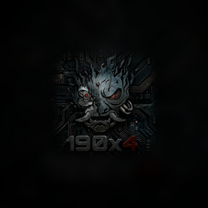
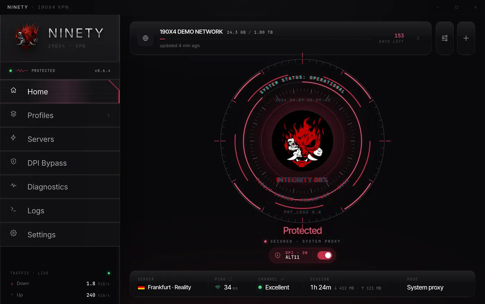

Режимы Windows
Локальный proxy, системный proxy, VPN · TUN и WARP-only. Elevated-режим используется только там, где он действительно нужен.

Ninety190X4 · SECURE TUNNEL
Desktop-клиент для Windows вокруг sing-box, WARP, правил маршрутизации и диагностики соединения.
Не обещает анонимность. Даёт аккуратное управление подключением, режимами Windows и видимую диагностику.
Windows networking client
Ninety собирает подписки, одиночные профили, WARP, TUN, маршрутизацию, логи и автообновления в один desktop-клиент. Фокус проекта — предсказуемое состояние подключения, честные ограничения и аккуратная работа с системными настройками Windows.
Возможности
Локальный proxy, системный proxy, VPN · TUN и WARP-only. Elevated-режим используется только там, где он действительно нужен.
Подписки, standalone-ссылки и TrustTunnel endpoint-файлы. Импорт из буфера и deep links держатся в одном пользовательском потоке.
LAN bypass, региональные правила, пользовательские правила по доменам, IP и процессам, плюс отдельный монитор активных соединений.
Проверки задержки, throughput-наблюдение, перепроверка узлов, подсказки по восстановлению и понятные логи вместо пустого статуса.
sing-box остаётся центральным роутером, а XHTTP, NaiveProxy и TrustTunnel подключаются через локальные мосты, когда профиль этого требует.
Трей, восстановление после обновления, темы, onboarding, локализации и осторожные дефолты для логов и runtime-конфигов.
Интерфейс

Документация
Документация объясняет режимы, privacy-модель, routing и troubleshooting без публикации приватных URL, UUID, ключей, WARP state или полных конфигов.
Релизы публикуются через annotated tags, draft release и CI-артефакты. OTA changelog берётся из `latest.json`, а не из уже опубликованного текста релиза.
Safety notes
Приватность зависит от сервера, провайдера, профиля и окружения Windows. Ninety помогает управлять подключением, но не меняет эту базовую модель доверия.
В публичные issues нельзя вставлять subscription URLs, UUID, токены, private keys, WARP data и полные экспортированные конфиги.
TUN, kill switch и DPI-совместимость могут менять сетевое состояние Windows. Включайте их осознанно и проверяйте настройки перед репортом.